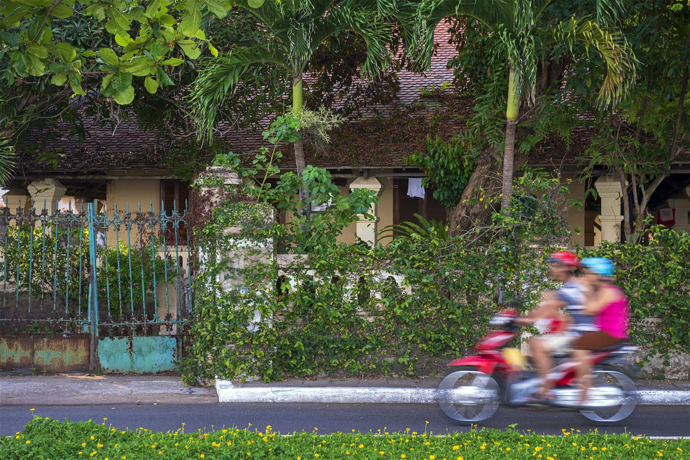
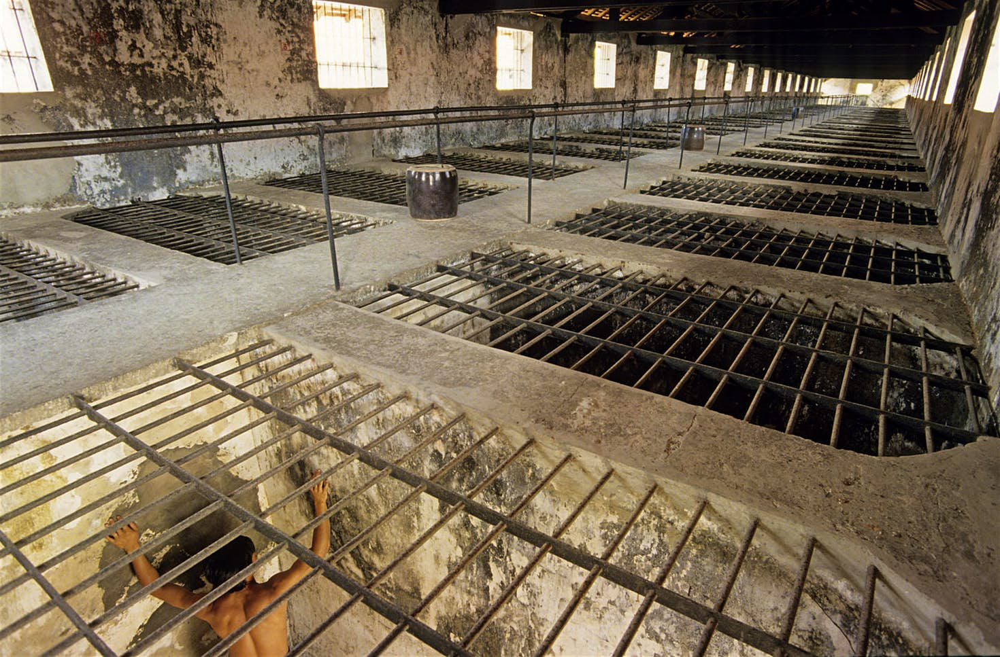
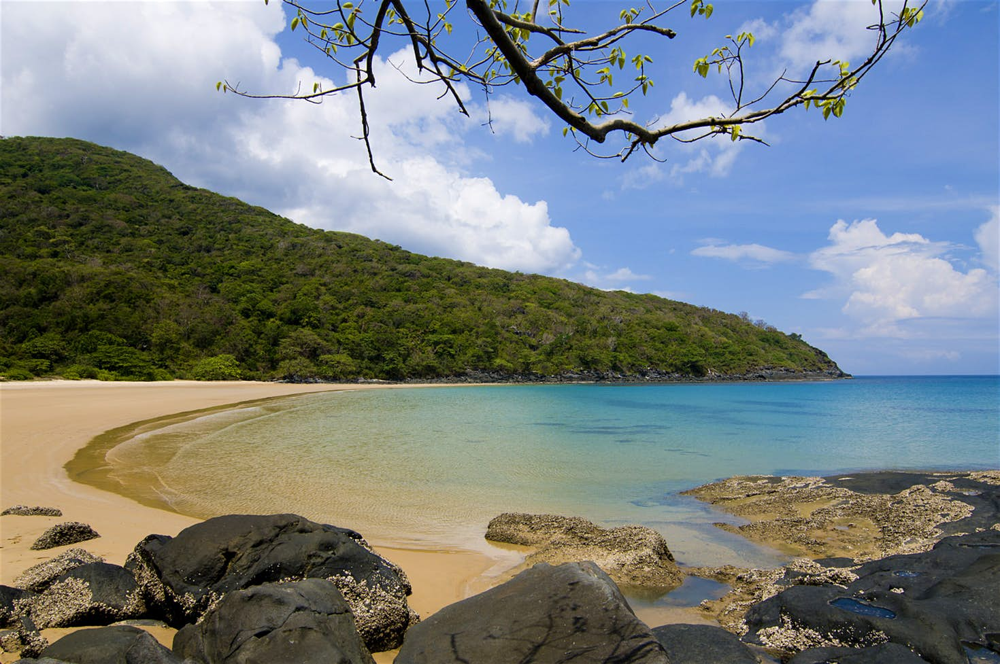
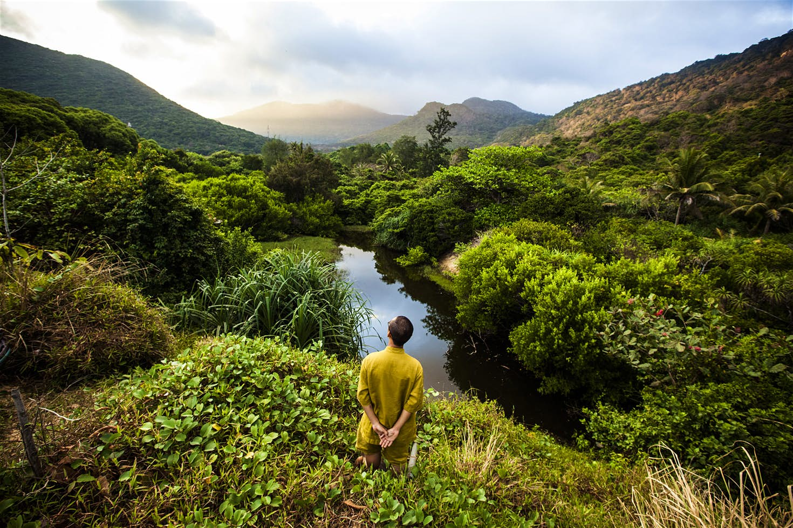

Isolated from the mainland, the Con Dao Islands are one of Vietnam's star attractions. Long the Devil’s Island of Indochina, the preserve of political prisoners and undesirables, it now turns heads thanks to its striking natural beauty. Con Son, the largest of this chain of 15 islands and islets, is ringed with lovely beaches, coral reefs and scenic bays, and remains partially covered in thick forests. In addition to hiking, diving and exploring deserted coastal roads and beaches, there are excellent wildlife-watching opportunities such as the black giant squirrel and endemic bow-fingered gecko.
Take a morning stroll in Con Son town
The islands' tiny capital is a delight to explore on foot, with (almost) traffic-free streets, a couple of traffic lights (which don’t work) and a solitary gas station (which closes for a siesta). This is Vietnam in the slow lane.
Begin with an early morning stroll along the town’s spectacular promenade, with a horizon-filling turquoise ocean on one side and a roster of handsome ochre French colonial buildings to admire on the other. You’ll pass the old Gallic customs house where Camille Saint-Saëns composed his opera Brunhilde in 1895.
Family on a motorcycle ride past a colonial house
Next up, take a peek inside Con Son Market, where you’ve the option of a local breakfast (think rice porridge or noodles) and a glass of drip-fed, treacle-thick Vietnamese coffee. If you’re thinking more along the lines of a cappuccino and an omelette, head to Infiniti Cafe & Lounge instead, which has an arty vibe and a great street terrace.
Discover the islands' terrible past
For a good overview of the islands, their environment (the Con Dao are important nesting grounds for sea turtles and there are 11 endemic trees) and their role as a concentration camp, drop by the modern Con Son Museum. This will prepare you for a tour of the prisons themselves.
There were once 11 jails. The largest was Phu Hai, where political rebels and criminals were herded together naked in the French period; today the dank rooms are filled with emaciated, chained mannequins. This prison acted as a revolutionary university for leaders of the People's Army of Vietnam and Vietnamese Communist Party, many of whom were incarcerated here by the French and Americans.
The infamous Tiger Cages
The most difficult prisoners were singled out for particularly gruesome treatment in the infamous neighbouring Tiger Cages, where they were kept in open-roofed pens, beaten with sticks and doused with lime (which burns the skin). O ver 20,000 prisoners died in Con Dao
Reflect on the beach
After a disturbing look into Con Dao's past, lighten your mood with a trip to the beach. Grab a scooter and buzz up to the north of Con Son island, past towering granite hills and fishermen’s houses wrapped in wild bougainvillea. Nestling in a niche in the coastline close to the airport is the glorious cove of Dam Trau, flanked by rocky promontories, blessed with soft pale sand and fringed by casuarina and pandan trees. Feast on ocean-fresh seafood (try the crab) at one of the shacks on the shore.
Beautiful Dam Trau beach
On the return leg you could drop by the uber-luxurious Six Senses resort (Angelina and Brad stayed here in 2011), which occupies a stunning sheltered beach, for a sundowner, or even a gourmet meal. Alternatively, dine in the family-owned Thu Ba in Con Son town for delicious Vietnamese dishes (including plenty of choices for vegetarians). The English-speaking owner will guide you through the menu and make suggestions.
Hike the national park
Drop by the National Park management office at 29 Vo Thi Sau, Con Son town and get a (free) permit for entering the national park. There are many trails but some are closed during dry season (November to February) because of the risk of forest fire.
The green, mountainous landscape of the interior is great for hiking
The two most popular are the hike to the rocky bay of Ong Dung (where there’s good snorkelling on a fine coral reef offshore) and the steep climb up to So Ray, an abandoned plantation with fine views over the islands – it’s now home to a large troop of long-tailed macaque monkeys (watch they don’t steal your lunch!). In the forest keep an eye out for other wildlife, including black giant squirrels and monitor lizards.
Dive Vietnam's best reefs
The Con Dao islands' reefs are unquestionably the best in Vietnam, with healthy soft and hard coral, and there are also a few wrecks to explore (including a 65m Thai freight ship). You can expect to see a good variety of tropical marine life: parrot fish, triggerfish and perhaps a turtle. The best conditions are between January and June but diving is possible year-round.

The clear waters around the Con Dao Islands provide excellent diving conditions < /p>
Professional dive schools include Dive! Dive! Dive!, a long-established operation run by Larry, who knows the seas around Con Dao better than his backyard. The Con Dao Dive Center is another great outfit. Prices are comparable whoever you book with: two-dive packages cost around US$140; snorkelling trips about US$40.